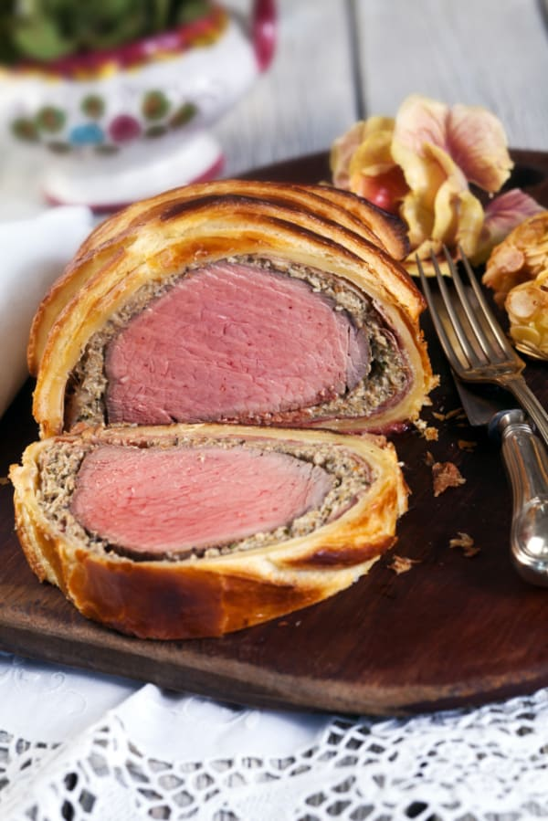

Beef Wellington

Easy to make, turned out great.
Ingredients
- 1 pound beef tenderloin
- 1 pound cremini mushrooms
- 1 sheet frozen puff pastry, thawed
- 6 slices prosciutto (thinly sliced)
- 2 egg yolks, lighty beaten
- 3 tablespoons extra-virgin olive oil, divided
- 1 tablespoon milk
- salt and freshly ground pepper, to taste
Directions
- Preheat oven to 400º F.
- Place mushrooms in food processor and pulse until a semi-smooth paste forms.
- Transfer mushrooms to a medium pan over medium-high heat, and add 2 tablespoons olive oil, salt and pepper.
- Cook until mushrooms release moisture and cook down. Set mushrooms aside.
- In the same pan, heat remaining 1 tablespoon olive oil over high heat. Add beef, seasoned with salt and pepper, and brown on all sides. Once you’ve placed the beef in the pan, don’t move it until it’s well seared.
- Set the beef aside and brush it all over with Dijon mustard.
- Lay out a sheet of plastic wrap and place prosciutto, overlapping, on top of it.
- Spread mushroom paste on top of the prosciutto and place beef on top of the paste.
- Pick up the short edge of plastic wrap that’s closest to you and lift if up and over the meat. Separate the prosciutto from the plastic wrap (so you don’t accidentally wrap the plastic) and roll it over itself. Tuck in the sides of prosciutto and finish wrapping beef.
- Seal in plastic wrap and refrigerate 30 minutes.
- Lay out puff pastry and roll/wrap beef. Try to keep puff pastry from overlapping too much, as it won’t cook through. Trim excess.
- Combine beaten eggs with 1 tablespoon milk and beat together. Brush all over the top and sides of beef roll.
- Score the top of roll with a sharp knife, being careful not to pierce through the pastry.
- Brush again with egg wash and place on baking sheet.
- Bake for 25-35 minutes, or until internal temperature reaches 125-30º F.
- Remove from oven and let rest 10 minutes before slicing and serving.